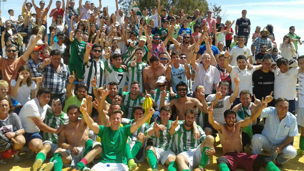
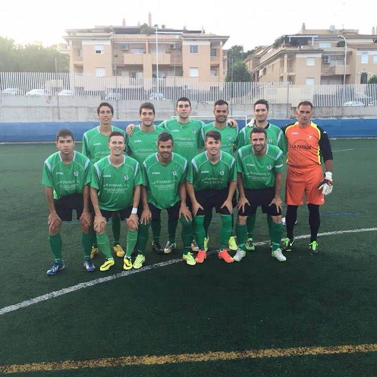
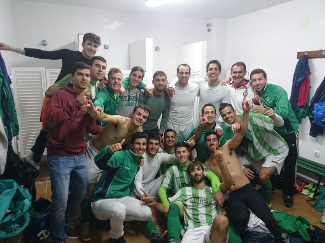
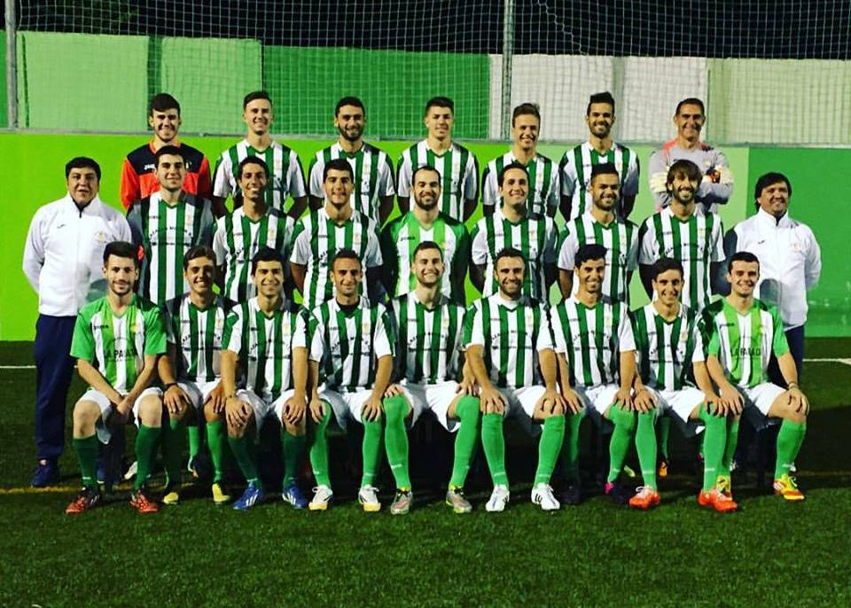
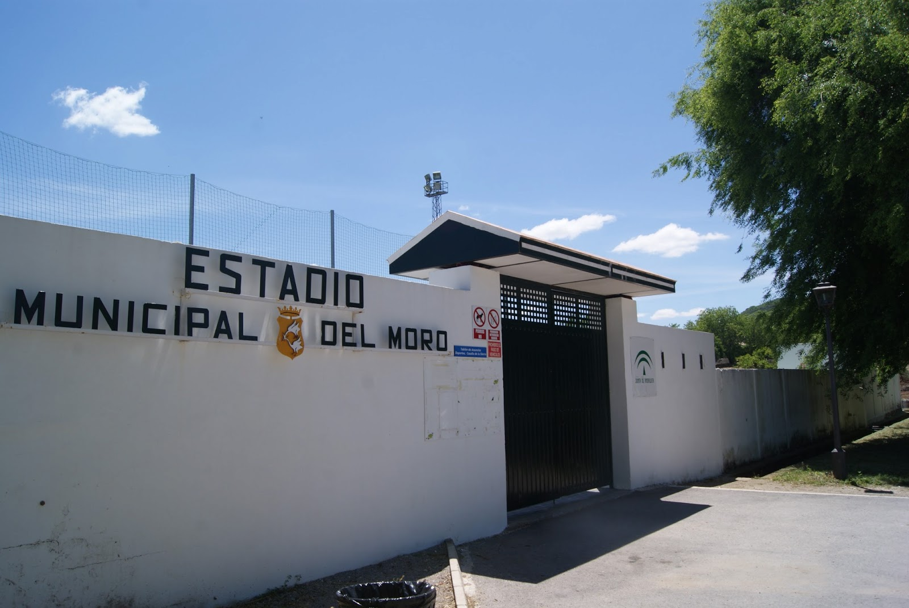
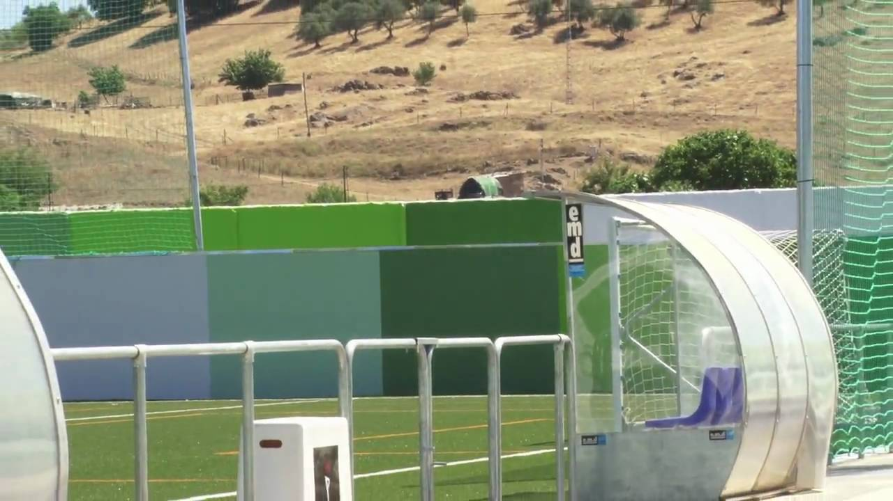

La historia futbolística está escrita por valientes héroes que saltan a un terreno de juego y se dejan el alma para defender un escudo. Muchas son las hojas históricas de batallas futbolísticas que quedaran grabadas en los anales del fútbol mundial, pero sin lugar a duda alguna el Cazalla Balompié acaba de entrar por la puerta grande de la historia de este maravilloso deporte. Los guerreros verderones, dirigido por el emperador Miguel Ángel Arguelles, han llenado de gloria a sus fieles aficionados, dejándose cada gota de sudor por conseguir el éxito del ascenso y la conquista del título de liga. Hoy, 10 del mayo de 2015, será la fecha que recordarán los amantes del Cazalla Balompié para siempre y es que sus gladiadores lograron la victoria por 1-2 ante el Priorato a falta de 3 minutos del final. Triunfo, Título, Ascenso, Honor y Gloria. Tras el pitido final, la alegría invadió a los seguidores que se acercaron al estadio San Isidro, donde jugadores, cuerpo técnico y afición celebraron por todo lo alto el éxito conquistado.
     